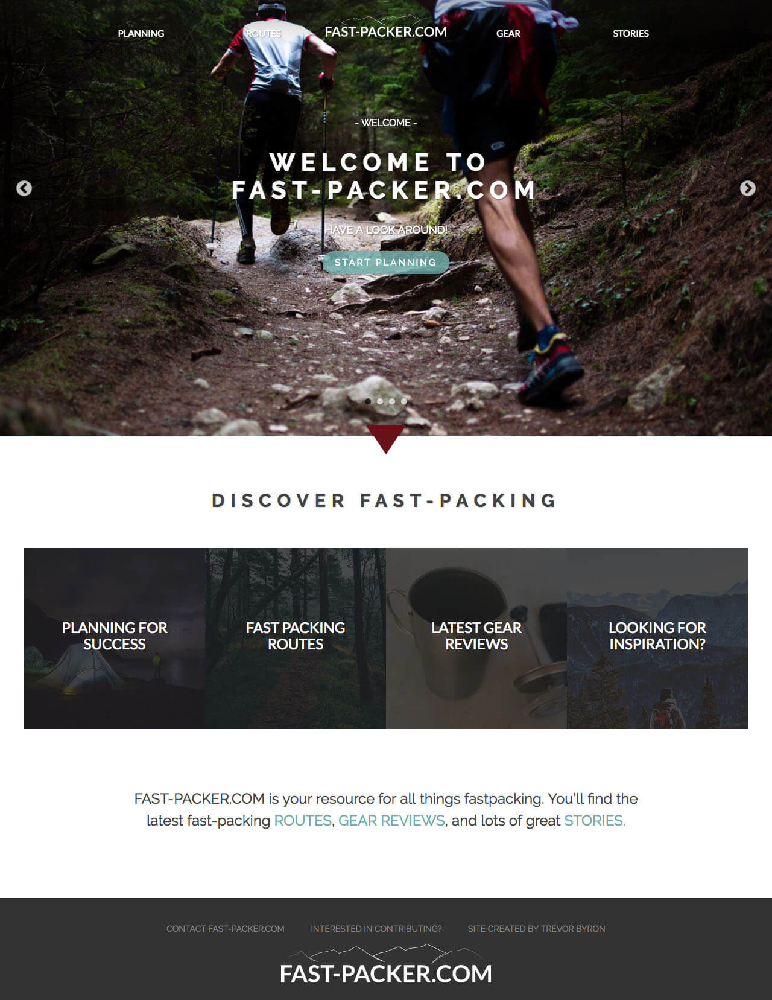
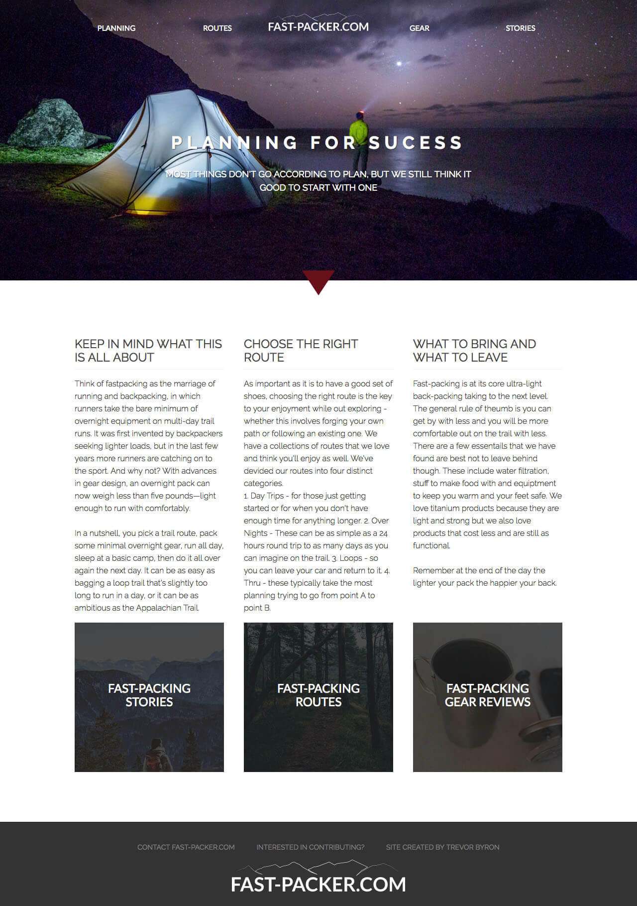
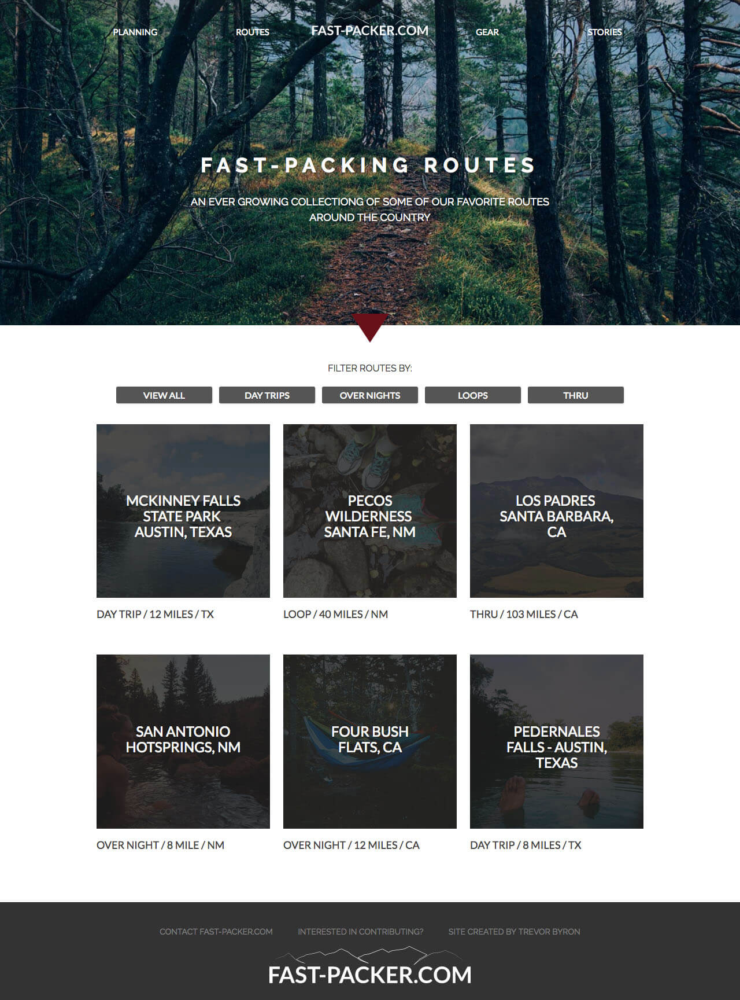

Fast-Packer.com
FAST-PACKER.COM is a resource for all things fastpacking. You’ll find the latest fast-packing routes, gear review, and lots of great stories.
The Problem
As the Fast-Packing community grows, they do not have an online resource to research more about the sport, help plan trips, find the latest lightweight gear reviews, or simply keep up with what the rest of the community is up to.
Solution
I've created an immersive website where those interested in Fast-Packing can come and learn more about the sport, be inspired through stories and photos and find help planning their first trip, and become part of the Fast-Packer community. Veteran Fast-Packers can read up on reviews of the latest gear and search for exciting new routes to run.
View Live Site

Designing the Experience
I had three main ojectives while designing Fast-Packer.com:
1. I aimed to create a navigation system throughout the site that felt straight forward as well as natural. I wanted users to feel in control, navigating to where they want while, at the same time, creating a natural flow that lead users through the content.
I did this by creating multiple routes to get to the same destination. I kept the traditional fixed header so users always had a clear path and added secondary navigation when content naturally lead users to drill deeper into a subject.
2. I wanted the site to be aesthetically beautiful and reflective of the natural environment in which Fast-Packing exists. I used large photos, natural colors and dynamic interactions between content, creating a feeling of depth reminiscent of the natural world.
I created depth by implementing a parallax effect, making different elements scroll at slower speeds, to create the illusion that large landscape scenes are farther away from the viewer.
3. I wanted to create a space where users who need information quickly will be able to find what they need in an easy and efficient manner. At the same time, I wanted to give the browsing users enough content to explore and photos to meander through in a leisurely manner.
Wherever possible, I used illustration and icons to create patterns and consistency throughout the user's experience on the site, and aid in their ability to quickly scan for the details they are looking for.
Pages
Home
Planning
Routes
Gear
Route Details
Gear Review